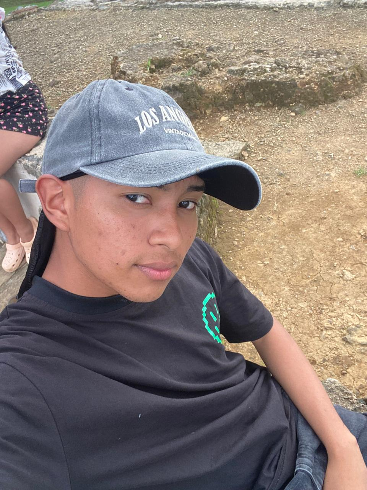
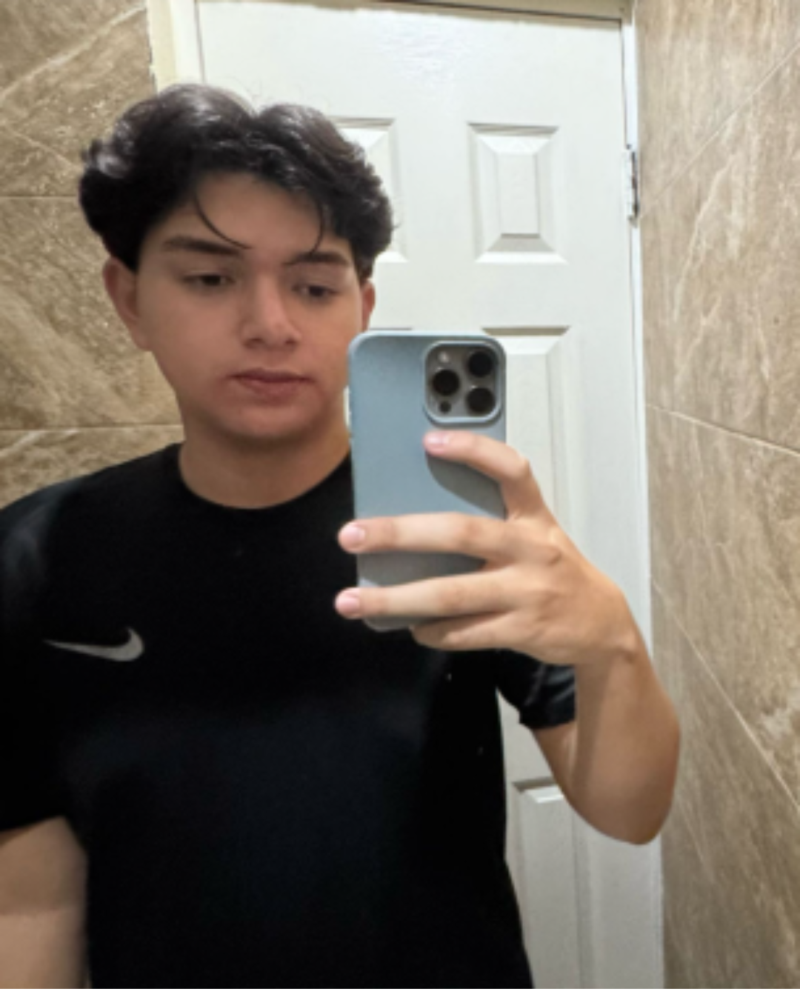
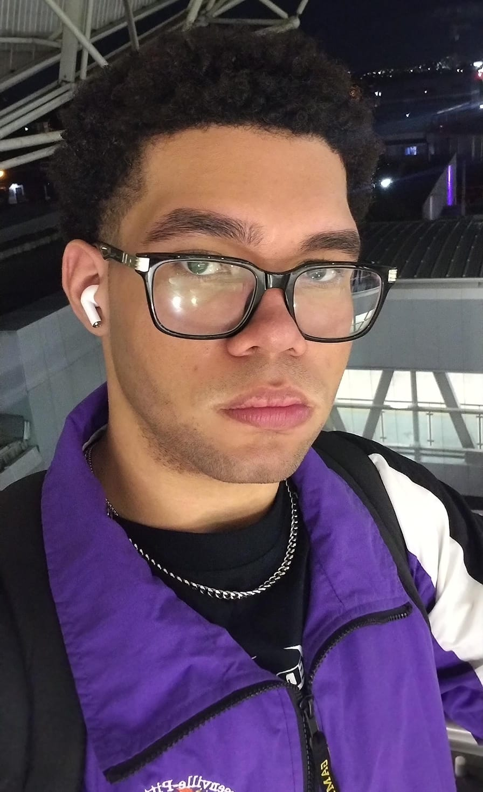

Rogelin Cortez
Estudiante de Ingeniería de Software en la Universidad Tecnológica de Panamá. Apasionado por el desarrollo web y las nuevas tecnologías digitales.

Estudiante de Ingeniería de Software en la Universidad Tecnológica de Panamá. Apasionado por el desarrollo web y las nuevas tecnologías digitales.
Entusiasta del diseño UI/UX y la programación orientada a objetos. Colabora en proyectos de desarrollo de software para medios digitales y plataformas informativas.

Interesado en la seguridad informática y el desarrollo backend. Participa en proyectos de código abierto y comunidades tecnológicas panameñas orientadas a la innovación.

Estudiante de Ingeniería de Software con interés en el desarrollo fullstack. Busca aplicar la programación para crear soluciones tecnológicas que resuelvan problemas reales.
Colaborador en el proyecto. Interesado en el desarrollo de software y las aplicaciones de tecnología en medios digitales.